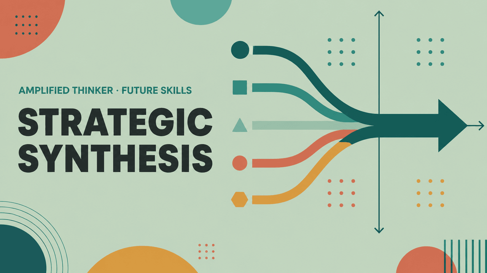

Analysis that never becomes a decision is just expensive reading. This skill builds the discipline to converge — to name the trade-off, make the call, and frame it so others can act.

Video generated by Gemini Notebook from this page's content.
We've all seen it. A 40-page evaluation that ends without a recommendation. Analysis that never actually becomes a decision is just expensive reading.
Teams often request another data pull, or wait for one more stakeholder view. It feels like progress, but it is usually avoidance. Collecting information is simply safer than committing to a choice. The decision happens anyway — it just gets made by default, later on, dictated by the loudest voice in the room, the nearest deadline, or the option nobody had the standing to block.
We need to build the discipline to converge. We are going to look at how to take conflicting, incomplete inputs and produce one defensible direction that your team can act on.
Step one in converging your data is deciding exactly what matters most — and you have to do this before you even look at your available options. This matrix handles classical decision analysis. It is a structure to score options against criteria you weight in advance. Setting those weights is the actual decision.
Let's say we are evaluating three ways to handle a vendor renewal. We will measure them against three criteria: cost, migration risk, and feature fit. Before evaluating the vendors, we state our priorities. We weight cost heavily with a 3× multiplier, and migration risk at 2×. When we apply the 1-to-5 scores, the incumbent vendor feels safer and scores perfectly on migration risk. But because we weighted cost at 3×, the challenger wins out, 24 to 20.
Often a team looks at a result like this, dislikes the winner, and immediately wants to re-score the options until their preferred vendor comes out on top. If the winner feels wrong, the honest move is to argue the weights, not the scores. Adjusting the weights forces everyone to explicitly name the trade-off they are actually willing to make.
Now that we have a chosen direction, we have to recognize that a plan relying on a perfect forecast is incredibly fragile. This is a 2×2 grid for mapping out scenarios. To stress-test our choice, we pick the two external uncertainties that would do the most damage to our project. For an 18-month platform bet, those uncertainties might be how fast AI adoption lands, on the y-axis, and how hard regulation tightens, on the x-axis. Crossing these variables gives us four distinct futures to test our strategy against, instead of placing a single bet on one prediction.
We need to look closely at the bottom-right quadrant: the intersection of slow AI adoption and heavy regulation. This is frozen ground. In this specific future, our bet is wrong on both axes and the current plan completely fails. By identifying this failure state in advance, you can name a specific trigger for when to stop spending and exit the bet entirely.
The final step is getting this stress-tested choice to the people who need to approve it, without losing their attention. Most analysis is written in the exact order it was discovered. The writer presents all the background, then the research, and finally reveals the recommendation at the very end.
This three-tier pyramid illustrates the Pyramid Principle. To communicate effectively, we invert the structure and lead with the final answer. The top tier delivers the bottom-line action immediately: extend both contractors through Q3, then stop. Next, we present the supporting logic — the middle tier outlines the specific reasons: the migration lands in Q3, and new hires cannot ramp up before then. Finally, the bottom tier holds the hard evidence: the migration plan dates, the average ramp-up times, and the exact budget lines.
By structuring it this way, a decision-maker who reads only line one still knows what you want. Putting the answer at the top ensures you have compressed the reasoning — you are doing the heavy lifting, instead of handing over raw data and asking the stakeholder to do the synthesis.
We started with a pile of conflicting inputs. By applying objective scoring, testing against harsh futures, and structuring the final delivery, we built clarity. This framework guarantees your trade-offs are named, your futures are tested, and your action is framed. The goal of strategic synthesis is never to produce a prettier analysis — it is to produce a definitive choice, so an organization can confidently get to work.
To solidify these skills, head over to the full learning plan and start the 5-day habit builder today.
Without Strategic Synthesis, teams keep collecting — another data pull, another stakeholder view, another week — because collecting feels safer than choosing. The decision gets made anyway, just later and by default: the loudest voice, the nearest deadline, the option nobody had the standing to block. The trade-off still gets paid. It just never gets named, so nobody can defend it afterwards.
A 40-page evaluation that ends without a recommendation. A project eighteen months in that everyone privately doubts and nobody will stop. A decision the room agreed to that three people describe differently the following week.
The ability to take conflicting, incomplete inputs and produce a choice you can stand behind — with the trade-off stated out loud, the assumptions marked as assumptions, and the reasoning compressed into something a decision-maker can act on without reading the analysis behind it.
Strategic Synthesis & Decision-Making is the practice of converging incomplete, conflicting inputs into a single defensible direction — by naming the trade-off explicitly, stress-testing the choice against plausible futures, and framing it so others can act on it.
Analytical Thinking produces the picture. Creative Thinking produces the options. This skill is what happens next: choosing one, accepting what that costs, and carrying it far enough that someone else moves. It's the only one of the four that has to end in a commitment.
Produces the structured picture — what's happening and why. This skill decides what to do with that picture, including which parts of it don't change the call and can be set aside.
Produces the range of options worth considering. This skill chooses one of them and commits — which means it also produces the "no" that every "yes" implies.
Classical decision analysis · popularised as the Pugh matrix, 1980s
Score each option against criteria you've weighted in advance. The weights are the actual decision — they're where you state what matters most, before you know which option they favour.
Three ways to handle a vendor renewal, scored 1–5 against three weighted criteria. The incumbent felt safest — and does score best on migration risk. Weighting cost at 3× is what shows it losing anyway.
Scores 1–5, higher is better. If you dislike the winner, the honest move is to argue the weights — not to re-score until the answer changes.
Peter Schwartz · Global Business Network, from the Shell scenario tradition
Pick the two uncertainties that would most change your decision. Cross them, and you get four futures instead of one forecast. A choice that only works in one quadrant isn't a strategy — it's a bet on a prediction.
Land grab. Speed wins; the plan is under-ambitious and we're late to a market that moved without us.
Compliance tax. The build works but ships slower; governance work we deferred becomes the critical path.
Long runway. The plan holds comfortably — the risk is over-investing ahead of demand that hasn't arrived.
Frozen ground. The bet is wrong on both axes. This is the quadrant to name a trigger and an exit for.
An 18-month platform bet, crossed on the two uncertainties that actually move it: how fast AI adoption lands, and how hard regulation tightens.
Barbara Minto · McKinsey · 1970s
Lead with the answer, then the reasons, then the evidence. Most analysis is written in the order it was discovered — which forces the reader to do the synthesis you were supposed to do for them.
Answer: Extend both contractors through Q3, then stop.
Reasons: The migration lands in Q3; new hires can't ramp before then; the cost fits inside the approved envelope.
Evidence: Migration plan dated 12 March; an 11-week average ramp across the last three hires; £84k against a £110k line.
A DECISION-MAKER WHO READS ONLY LINE ONE STILL KNOWS WHAT YOU WANT
Each request has a sponsor with a real case. The team runs more discovery, builds a comparison deck, and takes it to a review that ends with "let's see if we can do some of each."
Two of the three ship late and thin. Nobody ever said which of the three mattered most, so the trade-off got made by capacity rather than by choice — and there's no stated reason to point back to when it's questioned.
The team agrees three weighted criteria before scoring — retention impact ×3, effort ×2, strategic fit ×1 — then scores all three requests against them.
Request #2 wins on the criteria everyone had already signed up to. One thing ships properly, and the "no" to the other two is defensible in a sentence: not that they're bad, but that retention was weighted highest and they scored lower on it.
Strategic Synthesis & Decision-Making is the discipline of turning incomplete information into one defensible direction. It means naming the trade-off out loud, testing the choice against futures rather than forecasts, and framing it so someone else can act on it without you in the room.
The output isn't a better analysis — it's a decision other people can move on.
Ready to go deeper?
The Full Learning Plan covers first principles, mental models, behavioural indicators, and a 5-day habit builder — around 60–75 minutes of structured practice.
Open Full Learning Plan